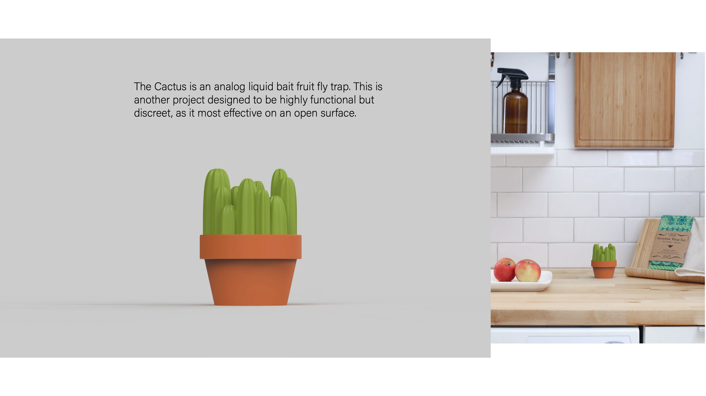

about me
work
Katchy Cactus
new product

![Portfolio page: a sheet of trap concept sketches with a photo of 3D-printed prototypes, under the text “Dozens of part configurations, hole designs, and shapes were tested to reach the final result.” Beside it, an exploded render of the cactus lid and pot with callouts: Interior funnel makes it easy to get in, and hard to get out. Extruded cactus tunnels also trap flies looking for an exit. The well is easy to access and fill with apple cider vinegar and a bit of dish soap – proven effective, non-toxic, and readily accessible.](../assets/img/katchy-cactus/page-8.webp)